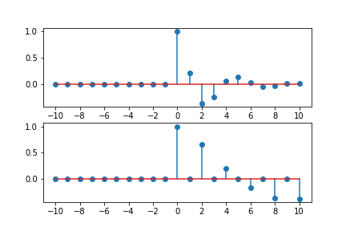
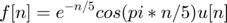
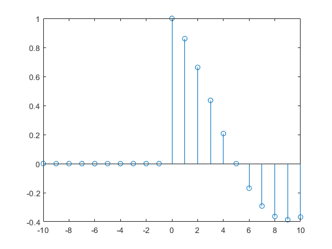
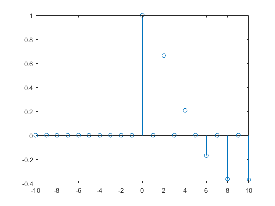
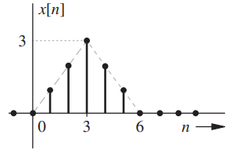
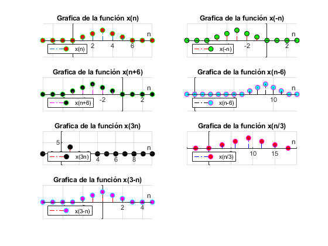
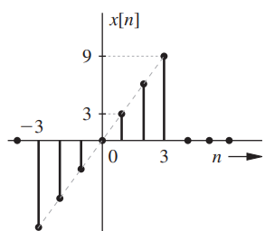
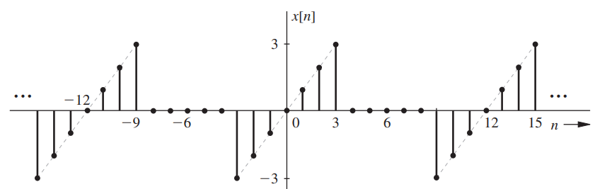
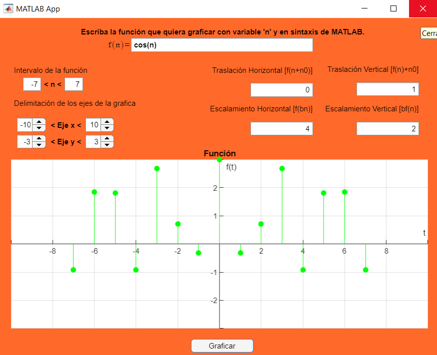

Practica 02: Señales en tiempo discreto
Integrantes:
- Bernal Casas Hector Obed
- Cueto Chávez Leonardo Daniel
- Gutiérrez Alvirde José Martín
Contents
- Objetivos.
- Introducción.
- Problema 1. Resuelva el problema 3.11-2 de Lathi
- Problema 2. Resuelve el problema 3.2-7, tenga cuidado en los escalamientos horizontales.
- Problema 3. Resuelva el problema 3.11-6 de Lathi
- Problema 4. Con los programas desarrollados en el punto 3, resuelva 3.1-1 c) y 3.1-2 b)
- Problema 5. Construya una app.
- Referencias
Objetivos.
- Manipulación básica de MATLAB
- Gráficas de señales reales y complejas discretas
- Transformación de señales discretas (escalamientos y traslaciones)
Introducción.
Se investigo como graficar con lenguaje Python y se desarrollo el problema 1 de esta práctica con dicho lenguaje. Se puede consultar el código de la solucion en éste enlace.
La gráfica resultante es la siguiente.

Problema 1. Resuelva el problema 3.11-2 de Lathi
Considere la función en tiempo discreto: 
Mientras que esta funcion anonima ejecuta correctamente una compresión de la gráfica como lo es con f[2n], esta no realiza correctamente la expansión gráfica como lo es con f[n/2]. Modifique la función anonima f para que para que tambien acomode correctamente la expansión gráfica. Pruebe su código graficando f[n/2] en el intervalo (-10<=n<=10)
f = @(n) exp(-n/5).*cos(pi*n/5).*(n>=0); % Funcion Original
n=-10:10;
stem(n,f(n/2))
 f2 = @(n) exp(-n/5).*cos(pi*n/5).*(n>=0).*(round(n)-n==0); % Funcion modificada
stem(n,f2(n/2))
 Problema 2. Resuelve el problema 3.2-7, tenga cuidado en los escalamientos horizontales.
Con la siguiente señal que se muestra a continuación

Bosqueje las siguientes señales;
- x[-n]
- x[n+6]
- x[n-6]
- x[3n]
- x[n/3]
- x[3-n]
% Se empieza por definir la función para la señal x(n). clearvars f = @(x) (x).*heaviside(4-x).*heaviside(x)+sinc(x-5); x = -15:15; y = f(x); f1 = @(x1) (x1).*heaviside(4-x1).*heaviside(x1)+sinc(x1-5); x1 = -6:3:22; w = f(x1); % Haciendo uso del subplot se da la indicación para graficar a la señal % x(n). subplot(4,2,1) stem(x,y,'LineStyle','-.','MarkerFaceColor','r','MarkerEdgeColor','g'); plano = gca; plano.XAxisLocation = "origin"; plano.YAxisLocation = "origin"; plano.Box = "off"; grid on; xlim([-3,8]); ylim([-5,5]); title("Grafica de la función x(n)"); xlabel("n"); legend({'x(n)'},'Location','southwest') % Haciendo uso del subplot se da la indicación para graficar a la señal % x(-n). subplot(4,2,2) stem(x,f(-x),"r",'LineStyle','-.','MarkerFaceColor','g','MarkerEdgeColor','k'); plano = gca; plano.XAxisLocation = "origin"; plano.YAxisLocation = "origin"; plano.Box = "off"; grid on; xlim([-8,3]); ylim([-5,5]); title("Grafica de la función x(-n)"); xlabel("n"); legend({'x(-n)'},'Location','southwest') % Haciendo uso del subplot se da la indicación para graficar a la señal % x(n+6). subplot(4,2,3) stem(x,f(x+6),"m",'LineStyle','-.','MarkerFaceColor','k','MarkerEdgeColor','g'); plano = gca; plano.XAxisLocation = "origin"; plano.YAxisLocation = "origin"; plano.Box = "off"; grid on; xlim([-8,3]); ylim([-5,5]); title("Grafica de la función x(n+6)"); xlabel("n"); legend({'x(n+6)'},'Location','southwest') % Haciendo uso del subplot se da la indicación para graficar a la señal % x(n-6). subplot(4,2,4) stem(x,f(x-6),"k",'LineStyle','-.','MarkerFaceColor','c','MarkerEdgeColor','m'); plano = gca; plano.XAxisLocation = "origin"; plano.YAxisLocation = "origin"; plano.Box = "off"; grid on; xlim([-1,13]); ylim([-5,5]); title("Grafica de la función x(n-6)"); xlabel("n"); legend({'x(n-6)'},'Location','southwest') % Haciendo uso del subplot se da la indicación para graficar a la señal % x(3n). subplot(4,2,5) stem(x,f(3.*x),"r",'LineStyle','-.','MarkerFaceColor','k','MarkerEdgeColor','k'); plano = gca; plano.XAxisLocation = "origin"; plano.YAxisLocation = "origin"; plano.Box = "off"; grid on; xlim([-2,10]); ylim([-5,10]); title("Grafica de la función x(3n)"); xlabel("n"); legend({'x(3n)'},'Location','southwest') % Haciendo uso del subplot se da la indicación para graficar a la señal % x(n/3). subplot(4,2,6) stem(x1,f(x1/3),"b",'LineStyle','-.','MarkerFaceColor','r','MarkerEdgeColor','m'); plano = gca; plano.XAxisLocation = "origin"; plano.YAxisLocation = "origin"; plano.Box = "off"; grid on; xlim([-5,20]); ylim([-5,5]); title("Grafica de la función x(n/3)"); xlabel("n"); legend({'x(n/3)'},'Location','southwest') % Haciendo uso del subplot se da la indicación para graficar a la señal % x(3-n). subplot(4,2,7) stem(x,f(3-x),"r",'LineStyle','-.','MarkerFaceColor','m','MarkerEdgeColor','c'); plano = gca; plano.XAxisLocation = "origin"; plano.YAxisLocation = "origin"; plano.Box = "off"; grid on; xlim([-6,5]); ylim([-5,5]); title("Grafica de la función x(3-n)"); xlabel("n"); legend({'x(3-n)'},'Location','southwest')
Problema 3. Resuelva el problema 3.11-6 de Lathi
Suponga que un vector x existe en el workspace de MATLAB, corresponde a una señal en tiempo discreto x[n] de duración finita.
- Escriba una función de MATLAB que, cuando le pase el vector x, compute y regrese Ex,la energía de x[n].
- Escriba una función de MATLAB que, cuando le pase el vector x, compute y regrese Ex,la potencia de x[n]. Asuma que x[n] es periodica y que el vector x contiene datos para un numero entero de periodos de x[n].
Suponga vector x corresponde a señal de x[n] finita
Energia x[n]
Ex=x.*x; Ex=sum(Ex)
Potencia x[n]
N=numel(x) Ex=x.*x; Ex=sum(Ex); Px=((1/N)*Ex
Problema 4. Con los programas desarrollados en el punto 3, resuelva 3.1-1 c) y 3.1-2 b)
Encuentre la energia de la Siguiente señal:

x=@(n) 3*n; n=-3:3; Ex=x(n).*x(n); Ex=sum(Ex)
Ex = 252
Encuentre la potencia de la siguiente señal:

u=@(n)1.0.*(n>=0); x=@(n) n.*(u(n+3)-u(n-4)); n=-3:8; N=numel(n) Ex=x(n).*x(n); Ex=sum(Ex); Px=(1/N)*Ex
N =
12
Px =
2.3333
Problema 5. Construya una app.
Se desarrollo una app con el App Designer de Matlab, que permite graficar señales reales en tiempo discreto, asi como definir el intervalo de la función y asignarle traslaciones y escalamientos, tanto horizontales, como verticales. El archivo de la aplicación se entrego junto al enlace de esta página. A continuacion se muestra una imagen de la aplicacion en funcionamiento.

Referencias
- Lathi, P. and Green, R., 2018. Linear Systems And Signals. 3rd ed. New York: Oxford University Press, pp.328.
- Lathi, P. and Green, R., 2018. Linear Systems And Signals. 3rd ed. New York: Oxford University Press, pp.314-316.